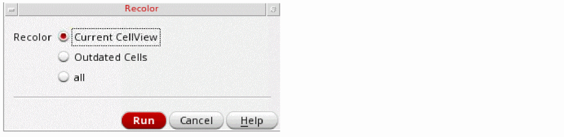
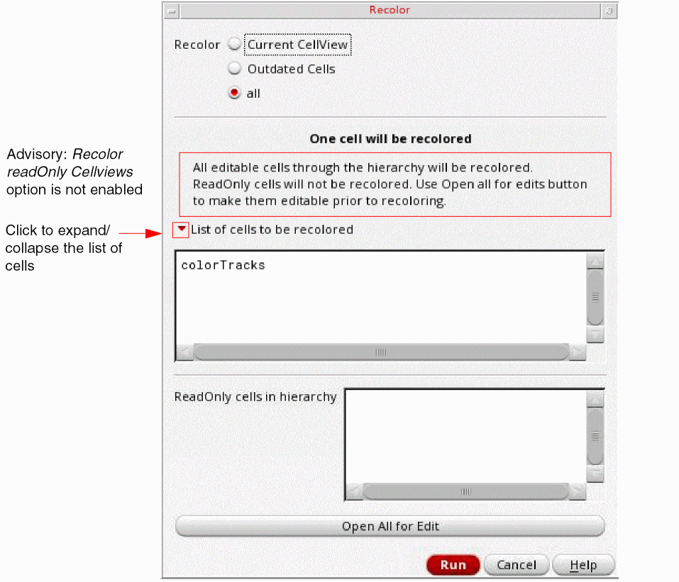

Recolor All
By default, Recolor All will clear all colors, then color the entire design. This is useful for determining if the design is colorable. If your design contains read-only cellviews or Pcells, refer to
-
Choose ReColor All from the Recolor Selected drop-down list.
The Recolor form appears.
 -
You can select Current CellView, Outdated Cells, or all.
When you select the Current CellView option, the shapes in the current cellview are recolored.
The Outdated Cells option, instantiates an uncolored cell in a design that is already colored. This method runs faster than the all option, for cases when only part of the data is out of date because valid color information is not recomputed.
The all option recolors all the cells.
You can use thereColorGUIScopeenvironment variable to set and query the ReColor options.
When the Recolor readOnly Cellviews option is enabled, the default advisory shows the following:
- (Optional) If there are read-only cells in the hierarchy for which you want to save the coloring, click Open All for Edit to make them editable.
-
Click Run.
The design is recolored based on the coloring method setting. See Methods to Check Multiple Patterning Violations to determine if there are any colorability issues.
The equivalent SKILL function is mptReColor.
A progress bar appears if the Recolor All option or mptReColor option takes longer than a few seconds to complete. This provides a view of the progress of the recoloring task. It also gives you the choice to cancel the recolor command.
To determine whether the color information is out of date, see
Coloring can be slow for large designs. You can interrupt the coloring process by pressing the Ctrl + C keys.
Return to top